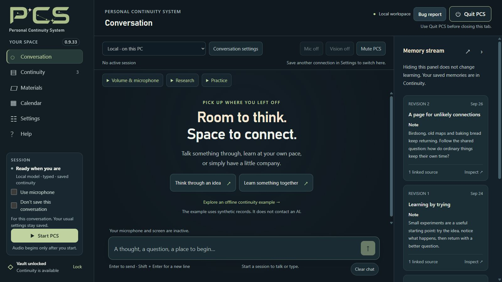

In this guide & related guides
- Before you begin
- 1. Download and extract the application
- 2. Open PCS and create your vault
- 3. Choose your conversation route
- 4. Check the result, then stop or quit deliberately
- Updating an existing installation
- When something goes wrong
Read next
Before you begin
PCS is a Windows application with an interface that opens locally in your browser. The app is free; cloud AI usage can incur charges from your chosen provider. The supported Local route needs compatible Windows/NVIDIA hardware and separate model and runtime downloads.
Recommended for Local AI: an NVIDIA GPU with at least 16 GB of VRAM for a smooth experience. Hardware needs vary with the model, context length, and optional vision or GPU voice features. This is a recommendation, not a compatibility guarantee. Google and OpenAI cloud connections do not require a 16 GB GPU.
This is a pre-release. Automated checks do not establish perfect microphone recognition, live-provider timing, Windows hardware compatibility or successful capture from every website. Begin with non-sensitive example information and keep backups.
Existing users: keep the earlier installation and a complete stopped data-folder backup. Some saved features raise the minimum PCS version able to read a vault. See Updating an existing installation before switching.
1. Download and extract the application
Use PCS-0.9.33-Windows-x64.zip for the complete Windows application. The matching Source ZIP is for development. Choose the named release assets, rather than GitHub’s automatic Source code archive.
Extract the entire ZIP into a fresh, writable folder and keep its files together, including
support
. Do not run it inside an archive viewer or overlay an older installation. Existing users should follow
Updating an existing installation
below.
Ordinary Python and application dependencies are included for offline first-run setup. Local models, runtimes, vision projectors, Whisper recognition and Kokoro voices are separate optional downloads. Typed Local use needs no speech pack. Check the SHA-256 checksums; developers can use the matching Source ZIP.
The top level keeps
Start PCS.exe
and
START_HERE.md
easy to find.
docs/HELP.html
opens full offline Help without starting PCS. Current guides, developer references and history have separate folders. Do not move or delete package members manually; the launcher verifies its manifest.
2. Open PCS and create your vault
Double-click Start PCS.exe . First launch prepares the bundled runtime and dependencies, designed to work offline and leave system Python unchanged. Use the browser page opened by the launcher.
The address begins with
http://127.0.0.1
. PCS normally removes its private access code from the address automatically. A clean address such as http://127.0.0.1:8765 contains no access code. If a launch link still contains #token=, keep that full link private, including in screenshots and support reports.
Choose
Create a vault
, enter and confirm a long, unique passphrase, and store it safely. PCS cannot recover a forgotten passphrase. Existing backup users can choose
Restore an encrypted backup instead
; follow the included
docs/RESTORE_VAULT.md
rather than experimenting with your only copy.


Explore full image ↗3. Choose your conversation route
Google or OpenAI
Open Settings → Connection, select your conversation provider and enter its API key. In Sharing & research, review Learn from our conversations and recall personal memories and its disclosure. Optional provider-role overrides are under Memory and preparation options. Save your choices before starting.
The Advanced connection test checks the selected Google or OpenAI Conversation key and model. It contacts that provider but sends no personal conversation, saved material, microphone audio or screen image, and generates no answer. Success confirms connection setup, not voice quality or tool behavior.
Return to Conversation . Leave Use microphone off for a text-only first session, or enable it and review the browser permission and input meter. Choose Start PCS . Check provider billing separately; the PCS download is not a supply of cloud API credits.
For OpenAI voice, Settings → OpenAI turn completion offers patient semantic detection (the default), balanced semantic detection, and a 1.5-second silence-based fallback. Apply changes on the next Start. These are turn-taking options, not a promise that every pause or sound will be interpreted correctly.
Supported Local route
Open Settings → Connection and choose Local on this PC. Follow the guided Gemma setup for the selected model and matching llama.cpp/CUDA runtime. Use the component download and folder controls to install or reuse files outside the application folder. Local conversation requires compatible Windows/NVIDIA hardware; ordinary saved-record browsing and cloud use do not.
Review continuity and local-tool choices, check compatibility and save. Experimental Custom GGUF profiles offer 8K, 16K and 32K context choices and require Check compatibility before saving and starting. Not every model, vision projector or hardware configuration is supported. Local conversation and memory use your selected model without cloud AI fallback.
Optional voice, vision and online lookup
Local microphone input needs the separate English recognition pack. CPU listening is the ordinary choice; an optional NVIDIA GPU listening pack must be selected explicitly and stays loaded during the session. For replies, choose an installed Windows voice or an optional Kokoro CPU/NVIDIA pack. Listening pauses during processing and playback.
Skip speech clears current and queued playback and cancels unfinished speech synthesis. Input returns after cleanup; completed text and saved actions remain, and later replies can still speak. Stop thinking separately cancels a Local answer and its pending lookup. The session and typed draft remain once cancellation is confirmed; already-saved actions are not undone.
OBS vision shares a scene you choose using a separate OBS installation and a compatible model/projector. Local replies can use the latest permitted frame on a user turn; this is not continuous autonomous desktop monitoring. Brave lookup requires its own Search API key and explicit online permission. Queries and public page requests leave the PC; generated queries can include details from your request. The Local model interprets results. Separately approved preparation can use its displayed cloud provider.
Saved web sources in Materials
Open Materials → Web sources → + Add a public page. Choose Download page text for an accessible public HTTPS page, or Paste page text for text you are permitted to retain. Pasting is available in Local mode and makes no website or AI request. A saved paste is labeled separately; PCS does not verify that it matches the address or contains the complete page.
You can also explicitly ask an eligible cloud conversation to retain a source with the required Search and Materials sharing. Routine lookup stays temporary. Downloading a saved web page is unavailable while Local mode is selected; optional Brave lookup is a separate feature. Inspect the retained text and save confirmation.
The importer captures extracted text from one accessible public HTTPS HTML, TXT or Markdown page, within its size limits. It does not execute interactive quizzes, crawl whole sites, fetch remote PDFs or recover missing answer keys. The captured source, generated notes and explicitly saved bookmarks remain distinct. Inspect the captured text and save confirmation before relying on it.
4. Check the result, then stop or quit deliberately
Use a simple example conversation and inspect any saved outcome. A spoken request or a queued notice is not proof that a change finished. Stop PCS ends the conversation; Lock also closes vault access. Quit PCS shuts the app down after confirmation.
Closing the browser tab can leave the desktop host running and the vault unlocked. Use the app's controls for the state you intend. Read memory controls and what stays local and what is shared , together with the current bundled Help, before adding personal material.
Updating an existing installation
A fresh extraction does not automatically find the vault in an older PCS folder. Keep the old installation and a separate backup until the new copy is verified.
Keep a pre-upgrade backup if rollback matters. Some saved features raise the minimum version that can read your vault and later backups. Recent examples include bookmark recovery drafts (0.9.25), saved web-source ancestry (0.9.26), pasted page text (0.9.27) and creating a new notebook (0.9.31). Earlier features also have version requirements. Clearing a feature does not lower the requirement, and an older backup restores only the state it contained. PCS 0.9.33 adds no new reader requirement.
Backups up to 2 GiB: normal Windows Save As, automatic encrypted backups and in-app restore support the full physical vault limit. Large operations can take several minutes; wait for confirmation. The compatibility browser-download route retains its 256 MiB limit. A capacity warning does not confirm that a new backup exists.
- In the old version, save edits, stop the conversation and finish or cancel background work. Keep the vault unlocked and use Backup & restore → Save current backup… . Wait for confirmation, save the backup outside the installation and keep its passphrase safe. Then choose Quit PCS and wait for shutdown.
- Extract the new Windows ZIP into a fresh folder and launch Start PCS.exe . Choose Restore an encrypted backup instead —do not create a new vault. Select the backup, choose Check backup , review the counts, and choose Restore this backup .
-
Choose
Unlock existing
with the backup's passphrase. Copy the original files from the old
data/Materialsfolder into the new installation'sdata/Materialsfolder, preserving filenames, contents and relative subfolders. Refresh documents with the vault unlocked and the conversation stopped. - Check saved records and settings, reselect any automatic-backup destination, and replace shortcuts that still launch the old version. Never run both installations against the same data directory.
Encrypted vault backups include saved records, prepared notes, saved web snapshots and bookmarks, but not original local Materials files.
Restoring does not merge with an existing vault. Detailed recovery guidance is in
docs/RESTORE_VAULT.md
inside the download.
Alternative: copy the fully stopped data folder
Quit PCS and wait for shutdown. Back up the entire
data
folder, including Materials. Before starting a fresh extraction, copy that folder beside its
Start PCS.exe
without merging it into an existing data folder. Keep the original, unlock the new copy with the current passphrase, and verify it. Use your actual data directory if you configured a custom path.
A stopped-folder copy also preserves original Materials as ordinary, unencrypted files. Protect those files separately. Preserve journals after an uncertain shutdown rather than deleting them, and resolve recovery before treating a single vault file as a complete backup.
When something goes wrong
Connected does not always mean input is available. Read the status: Local pauses listening during processing and speech; connection renewal can pause forwarding. A preventive OpenAI wait can keep one never-sent answer pending for up to two minutes and request it once when allowance permits. Do not repeat a pending question. A cancelled, expired or rejected request has a different notice and is not automatically replayed. Provider limits and memory-quality limitations remain.
In-app Help has 51 searchable answers and Research and Practice guides, including while the vault is locked. docs/HELP.html also opens offline. For startup diagnostics use the documented support/Start with console.cmd. Export a Bug report before quitting when possible, review it and share it yourself. Do not post keys, passphrases, launch links containing #token= or private records.
Guide for PCS 0.9.33. See the bundled Help and release notes for detailed controls and limitations.